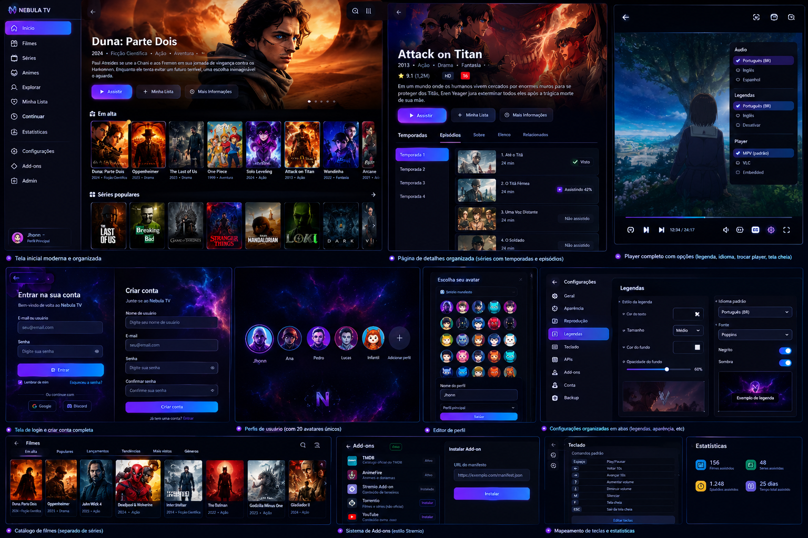

Filmes, séries e animes separados, busca, filtros, cards com preview e recomendações locais.
STREAMING DESKTOP • JAVA 17 • JAVAFX
Seu universo.
Seu universo.
Seu catálogo.
Uma central pessoal para filmes, séries e animes com visual cósmico, TMDB em segundo plano, perfis, progresso, add-ons e player.
Offline-firstSQLiteTMDB20 avatares

MUITAS MECÂNICAS
Feito para parecer produto, não protótipo.
Token local, testes assíncronos, cache e sincronização em segundo plano.
Fullscreen, seek, volume, legenda SRT/VTT, player externo e atalhos editáveis.
Contas locais, múltiplos perfis, PIN opcional e 20 avatares originais.
Instalação por manifesto e catálogo de fontes mantido separado do acervo local.
CRUD de títulos, fontes, reprodução e exportação/importação de catálogo.
PRONTO PARA GITHUB + CLOUDFLARE
Um projeto, dois destinos.
O desktop continua em JavaFX. O site de apresentação e download pode ser publicado na rede da Cloudflare e conectado diretamente ao GitHub.
Abrir repositório
Substitua o link pelo seu repositório depois do primeiro push.